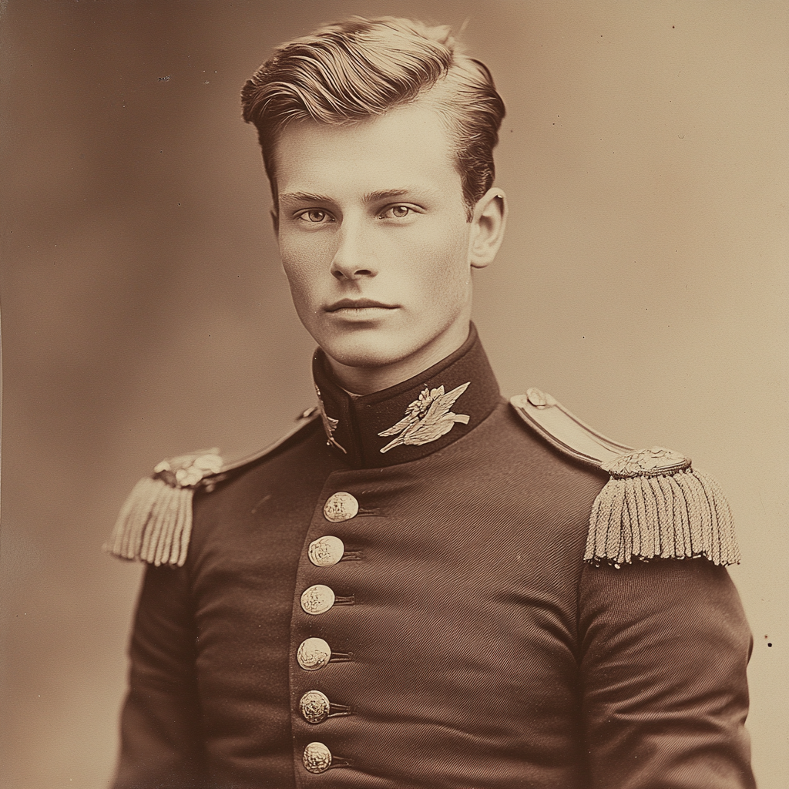

| Name | Sekondløjtnant Morten Bergesen [Exempted] |
| Age | 20 |
| Archetype | Officer |
| Campaign | The Lost Mountain Saga |
7
None recorded.
None recorded.
Seeking virtue and honor in the forum available to him.
Older brother was killed by a river vaesen. No one believed me.
I fear that I am already damned.
My brother died while we were in the service together. As a result of being the sole heir now, I was exempted from further service at my current rank of sekondløjtnant.
After his death, I can't stop seeing vaesen. As a pietist Lutheran, I fear that I am damned. Found hope in the order of Hermes; justified it first as mere language, than by interpreting 'Hermes' as an angel of the Lord. The implications that it might be a demon of deception instead is a bridge I can't allow my mind to cross.
Trying to save the others, since he is already damned.
| Weapon | Damage | Range | Bonus | Skill |
|---|---|---|---|---|
| Bayonet | 2 | 0 | +1 | Close Combat |
| Rifle | 2 | 1–3 | +2 | Ranged Combat |
| Saber | 2 | 0 | +2 | Close Combat |
Luther's Smaller Catechism.
Speaks Danish, French, Swedish, English.
The Society's headquarters includes the following amenities:
A record of events from sessions in which Morten was present. The campaign ran a session or two beyond the events documented here before ending.
A letter arrived from the Lindbergs. Their son had made a deal with a troll without their knowledge. Their grandson had been taken because the son refused to pay what was owed; in his place, the family now had a changeling.
The son possessed an instrument given to him by one of the trolls. Bjorn, Solomon, Morten, Torvald, and Samuel travelled to investigate, and determined the instrument was cursed.
The ritual to address it was difficult. The party met an Order of Artemis hunter. The curse required a sacrifice; the party assumed a goat would suffice. The heir was clawing his own skin off, desperate for the instrument. The trolls were holding the baby.
Issues began to develop around the castle. Members occasionally found themselves trapped or locked in rooms with no way out. The party felt fine for now, but in a weaker mental state. Five other threats in the house were still to be discovered.
Two figures appeared: a "Cinnabon man" and a tall, astute man. The latter was Franzibald Hansen, whom Morten recognized — a famous Danish author, and third in command of the Order. With him was his partner Bjorn (not to be confused with PC Bjorn Wolfkisse).
Morten hosted at the Bergesen seat. The party's destination involved the town mine. Rev. Bruselius — a Swedish Lutheran — was a figure of consequence. The journey to Falun was four days by train.
The night before the witch trial, Morten and Franzibald dined with Bruselius, his wife Emily, and his sister.
At dinner, Morten arranged for Franzibald to distract Bruselius and the sister, and pulled Emily into a side conversation in French.
Morten then spoke with Bruselius and Franzibald, taking Bruselius's side and lying about his desire to learn from his work. He learned that his own mother is financing Bruselius's mentor, Bishop Carlson, and that there is risk of the entire church being corrupted by these forces. It was also clear that Bruselius has a deep compassion for the poor.
Lisa had an urge to protect the mountain. She kept waking up with dirt on her feet. She was terrified that she might be a witch. Lisa trusted the party and was appreciative. There was an obsession with a gem on Franzibald's neck — Lisa had found the man (Franzibald) in the mines earlier that day.
The next morning, the party woke to the sound of the train coming in. A group of men stormed Lisa's house, breaking down her door, dragging her from her bed.
The party found Dagnes sobbing outside the door, covered in blood and the brains of her dog. Lisa was dragged forward to a witch trial.
Dagnes's dog had been slaughtered. Lisa was being dragged toward the church. The atmosphere was chaotic and excited. Men began abusing and accusing their wives and daughters of witchcraft.
The crowd was too thick to get through. Morten drew his saber and threatened the crowd, trying to get them to part. He stabbed, and hit a girl in the shoulder — her father had used her as a human shield. The crowd started to turn on him. Others called for him to finish off the witch.
He grabbed the girl's wrist and said, "we'll bring her to the altar." Solomon tried but failed to pull him back. Morten pushed forward with the girl.
Emily was crying. Dagnes arrived. Bruselius whispered something in her ear, and Dagnes said in a raised voice, "She's been acting weird, and has never liked my dog." The crowd roared.
Emily was crying: "This is all my fault, I couldn't leave her there to suffer! It was the only way to save her from him, but now I hear her crying at night." Torvald asked her what happened. "Who is actually responsible?"
Morten stepped up. "How can I help? I would like to learn." He followed Bruselius past those standing guard in front of the altar, stood to his right. Lisa screamed in pain as she watched Dagnes's betrayal.
A spirit heard the cries of its mother, the anger of the town, and woke up. "He will only hurt you if you're alive." Torvald felt fire consuming. An impossibly small baby, covered in soot, appeared — there were screams and then utter silence, except for the baby's whimpers.
Morten turned to say "Isn't that your child?", but there was a guttural scream from the baby, and Morten's pants and Bruselius were on fire.
Behold the judgement of god. — Morten, turning to the crowd
We're not damned until we're dead. — Morten
The town did not burn. Bruselius died. His sister went to an asylum. Emily died (uncertain). Solomon was badly injured and shipped off to an asylum. Franzibald was dead.
The party met with Bjorn — Franzibald's partner. Bjorn was worried about an old friend of Franzibald's: Amanda, who had written articles questioning a mining company, had been declared insane, and had been sent off to an asylum.
A letter was addressed to Joshua. Franzibald had had a green gem around his neck. Lisa now had the green gem, having taken it from Franzibald's neck.
The mining company had become very powerful after finding the green mineral. The party found where Amanda the journalist had been shipped off to: Uppsala Asylum.
The mineral did not feel like stone. There was green inside, and when they struck the vein it was like a released energy — the same Old Norse voice that Lisa had made was heard.
The stones are for the gods; the "Vanadisir must die." Sigrid Magnusson, possibly a member of the Vanadisir, is the wife of the couple who owns the CV Mining Corporation.
The campaign ran a session or two beyond the November 10 events. Notes from those sessions are not preserved here.